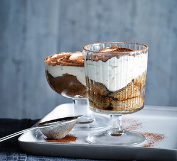

Tiramasu recipe

Condensed milk is the secret to this super snappy Italian dessert. Coffee and chocolate are a classic combo, simply layer them up and enjoy
Ingredients
- 3 tsp instant coffee granules
- 3 tbsp coffee liqueur (or Camp Chicory & Coffee Essence)
- 250g tub mascarpone
- 85g condensed milk
- 1 tsp vanilla extract
- 4-6 sponge fingers
- 1 tbsp cocoa powder
Steps to follow:
- Mix the coffee granules with 2 tbsp boiling water in a large jug and stir to combine. Add the coffee liqueur and 75ml cold water. Pour into a shallow dish and set aside.
- Make the cream layer by beating the mascarpone, condensed milk and vanilla extract with an electric whisk until thick and smooth.
- Break the sponge fingers into two or three pieces and soak in the coffee mixture for a few secs. Put a few bits of the sponge in the bottom of two wine or sundae glasses and top with the cream. Sift over the cocoa and chill for at least 1 hr before serving.